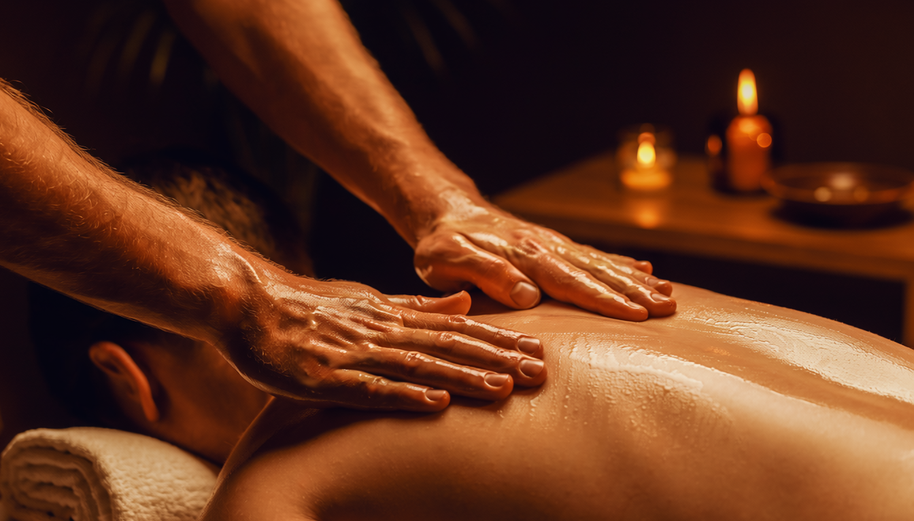

Let Everything Go.
Swedish Massage in Salt Lake City
The most time-honored form of therapeutic touch — redesigned for the demands of modern life. Long, rhythmic strokes that work from surface to structure, dissolving the stress your body has been quietly carrying for months. This is not a luxury. This is maintenance your nervous system has been asking for.

What Is Swedish Massage?
The Science of Letting Go
Swedish massage is Salt Lake City's most complete full-body reset — five evidence-backed techniques that lower cortisol, restore circulation, and quiet an overworked nervous system. One session shifts your body from fight-or-flight into deep repair.
At J Massage SLC, pressure is calibrated in real time — never a template, always a response. You won't feel worked on. You'll feel cared for.
Transparent Pricing
Simple, Honest Rates
No membership required. No hidden fees. Just great massage at a price that respects your time and your budget. Prices are approximate — confirm at booking.
Perfect for a targeted reset — shoulders, back, or a focused area of tension. Ideal when time is limited but relief is essential.
Book This SessionThe full-body experience. Your therapist has the time to work through every major muscle group with the depth and rhythm the session deserves.
Book This SessionThe complete immersion. Additional time allows for extended focus on chronic areas, a deeper relaxation arc, and a recovery period that leaves you renewed.
Book This Session* Prices are approximate estimates. Please confirm exact pricing when you book. Gift cards available — perfect for any occasion.
Why It Works
Six Reasons Your Body Needs This
Each benefit compounds on the last. The more consistently you receive Swedish massage, the more dramatic the results.
Deep Stress Relief
Swedish massage directly interrupts the cortisol cycle, lowering the stress hormone that keeps your muscles locked, your sleep disrupted, and your mood depleted. One session shifts the chemistry.
Improved Circulation
Effleurage strokes directed toward the heart mechanically improve venous return, flooding oxygen-depleted tissue with fresh blood. The result is warmth, color, and a vibrancy in the extremities you can feel the moment the stroke passes.
Muscle Recovery
Lactic acid accumulation in fatigued muscle tissue is the source of that deep, dull ache after exertion. Swedish massage accelerates its removal by promoting lymphatic flow, helping athletes and desk workers alike recover faster between demands.
Common Questions
Everything You Want to Know
-
Swedish massage is the foundational Western massage modality, characterized by long gliding strokes (effleurage), rhythmic kneading (petrissage), and gentle tapotement percussion. It feels like a wave of warmth moving through your muscles — deeply relaxing yet purposeful. Most clients describe it as the sensation of tension physically leaving the body. Sessions at J Massage SLC are customized to your pressure preference, so you're always in control of the experience.
-
Swedish massage works primarily on the superficial muscle layers using broad, flowing strokes to promote relaxation and circulation. Deep tissue massage uses slower, more concentrated pressure to address chronic tension in deeper muscle and connective tissue. Swedish is ideal for general stress relief and first-time clients; deep tissue is better suited for chronic pain, persistent knots, and structural tension. Many clients begin with Swedish and layer in deep tissue as their needs evolve.
-
Absolutely — Swedish massage is the ideal starting point for anyone new to massage therapy. The pressure is gentle to moderate, the techniques are non-invasive, and the experience is deeply intuitive. Our therapists take extra time during the initial consultation with first-time clients to explain each step, answer questions, and calibrate the session to your comfort level. You'll leave wondering why you waited so long.
-
For general stress management and maintenance, once or twice a month is ideal. If you're dealing with elevated stress, poor sleep, or the onset of new tension patterns, weekly sessions for four to six weeks can create meaningful, lasting change. Our therapists will assess your specific situation during your first session and recommend a cadence that makes sense for your body — and your schedule.
Ready to Melt Away the Tension?
Your first session is one click away. Same-day appointments frequently available. Your body has been asking for this — don't make it wait any longer.
The Gift That
Actually Gets Used.
No re-gifting. No regrets. A J Massage SLC gift card is the most thoughtful thing you can give — and the most eagerly redeemed. Delivered instantly by email. Never expires.
Choose an Amount
Redeemable for any service or add-on. No expiration date. Email delivery in minutes.